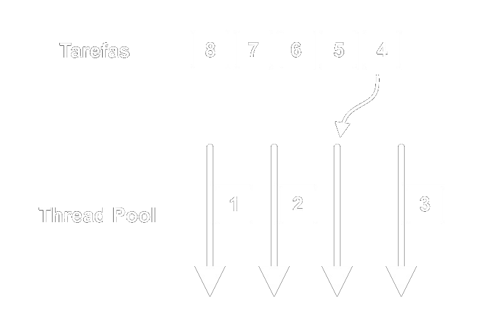

O MariaDB é um dos mais populares servidores de banco de dados do mundo, construído pelos desenvolvedores originais do MySQL com garantia de licensa aberta. Entre seus usuários pode-se destacar Wikipedia, WordPress.com e o Google. É rápido, escalável, robusto, possui um rico ecossistema de mecanismos de armazenamento, plugins e muitas outras ferramentas que o tornam muito versátil para uma grande variedade de casos de uso.
O MariaDB foi desenvolvido pelos criadores originais do MySQL e tem a garantia de permanecer Open-Source. A Fundação MariaDB apoia a contínua colaboração da comunidade no ecossistema MariaDB.
NÉ um sistema de gerenciamento de bancos de dados eficiente e completo, com uma série de recursos e soluções para manter a rapidez no acesso ao banco dados, facilidade de uso e segurança do sistema.
O sistema do MariaDB é projetado para funcionar com alto desempenho tanto se estiver em um banco de dados mais simples como também se for usado no nível empresarial.
O MariaDB é compatível com o MySQL em questão de definição dos dados e tabelas, APIs e protocolos de clientes, além de portas, sockets, etc - podendo facilmente substituí-lo sem configurações adicionais.
O funcionamento desse serviço de banco de dados deve ser estudado desde seção de desenvolvimento, onde o principal objetivo era trazer um funcionamento melhor em ambiente web e uma conexão rápida. Com isso, pode-se dizer que a forma de tratar carregamentos é muito mais ágil do que qualquer outra base de dados, unindo um único software versátil para várias versões de plataformas de sistemas e aplicação.
Introdutóriamente devemos saber que existe a engine de armazenamento chamada de Federated que utiliza dois banco de dados, um que irá manipular a tabela e outro que irá servir de host para o banco de dados própriamente dito.
Olhando mais para aplicações web o MariaDB pode ser usado por aplicações independentes (desenvolvidas por empresas de negócios, mobile e entre outras) rodando na nuvem ou localmente. Para tudo isso acontecer é necessário conhecermos as ferramentas que fazem este software funcionar.
A ferramenta FederatedX é uma engine de armazenamento que funciona tanto no MariaDB quanto no MySQL, através da libmysql que serve para a comunicação com a fonte de dados na qual está estritamente em um banco de dados relacional MySQL.
Toda engine de armazenamento deriva de uma biblioteca padrão handler que gerencia todas as funções de armazenamento, porém ao invés de implementar os métodos com instruções SQL já prontos a FederatedX constrói as instruções SQL para funcionarem no servidor remoto.
Em casos gerais, suponha que criamos uma tabela chamada pessoa, um arquivo chamado pessoa.MYD (arquivo com os dados, própriamente dito) será criado. O handler irá ler, incluir, excluir e atualizar os dados neste arquivo. Os dados informados (possivelmente os atributos do projeto) serão armazenados em um formato específico, portanto quando for feita a leitura dos dados devem ser lidos nos respectivos campos, para incluir os campos devem estar no devido formato para ser gravado com sucesso no arquivo.
Quando trabalhamos com FederatedX as informações de cada tabela não são armazenadas localmente e sim em um banco de dados externo, com isso será necessário o uso de uma biblioteca de instruções MySQL para ler, incluir, excluir e atualizar os dados. As informações serão trazidas através de uma query (chamada) SQL "SELECT * FROM pessoa", dessa forma será necessário ler todas as linhas da tabela, usando a query mysql_fetch_row que depois poderá ser convertida para o formato desejado definido pelo handler.
Abaixo segue o passo a passo de como funciona todo o mecanismo do FederatedX:
O MariaDB por padrão utiliza um aprimoramento do mecanismo de armazenamento InnoDB, mantendo os mesmos prefixos sendo compatível com a arquitetura MVCC avançada do InnoDB e com o design ACID (Concurrency Control with Transactions). Na prática ele é projetado para o uso de muitos núcleos, o que potencializa seu uso de memória.
Agora, para entendermos melhor vamos analizar algumas funções através da sintaxe dessa engine.
Como comentado anteriormente uma das principais instruções de um banco de dados é a inserção, alteração deleção, e claro, a busca. Clique em um trecho de código para ver com mais detalhes como é a implementação:
int ha_federatedx::write_row(uchar *buf);
O método acima tem a função de acrescentar uma linha na tabela, através do parâmetro *buf
que chama a função buf() que retorna um byte de dados de um array podendo utilizar esses dados
para extrair informações.
void ha_federatedx::start_bulk_insert
(ha_rows rows, uint flags);
Método que prepara a engine de armazenamento para receber a inserção da nova linha, utlizando o manipulador de linhas
ha_rows rows. Neste caso a função espera dois tipos de saída do servidor, caso o servidor desconheça o valor de linhas
que seriam inseridas na tabela o retorno será 0, caso contrário será o número de linhas. Deve-se lembrar que ao terminar essa preparação é necessário
que o método int ha_federatedx::end_bulk_insert() seja chamado para finalizar a preparação.
void ha_federatedx::update_auto_increment(void);
Esta função tem o dever de garantir ao banco de dados externo funcione correramente em relação as inserções na tabela. Sempre
após uma inserção a função chama uma outra função chamada last_insert_id() que definirá um novo id no campo que é
auto_increment, esse processo é feito via thd-> insert_id (ID)).
int ha_federatedx::update_row(const uchar
*old_data, const uchar *new_data)
Sim, o update_row() faz o que você espera, atualiza uma linha."UUUUAAAAU". O old_data terá o registro da linha anterior, enquanto
o new_data terá os dados mais recentes. Tenha em mente que o servidor pode fazer atualizações com base em requisições se um ORDER BY for usado. A requisição
não é garantida.
int ha_federatedx::delete_row(const uchar *buf)
Acredite se quiser, esta função apaga uma linha! buf conterá uma cópia da linha a ser excluída. O servidor irá chamar isto logo após a linha atual ter sido chamada
(de ou uma chamada rnd_next() ou de índice anterior). Se você mantiver um ponteiro para a última linha ou puder acessar uma primary_key faça a eliminação um pouco mais fácil.
Tenha em mente que o servidor não garante exclusões consecutivas. Requisições com ORDER BY podem ser usadas.
O sistema de threads implementado no MariaDB é baseado no modelo Thread Pool.
Uma pool de threads é uma coleção de threads, geralmente pré-instanciadas, que permanecem disponíveis para realizar tarefas.
De forma simplificada, o funcionamento da pool de threads parte do princípio que, mantendo um número de threads aguardando que tarefas sejam alocadas para elas, o desempenho é melhorado por não precisar que novas threads tenham que ser criadas e destruídas frequentemente para a execução de tarefas curtas.
Sendo um sistema de gerenciamento de banco de dados - database management system ou DBMS - o MariaDB é um software escalável para servidores. Ou seja, é necessário que possa manter um alto desempenho mesmo que exista um grande número de clientes fazendo uso do servidor em questão.
Tradicionalmente, o MySQL implementava uma thread para cada conexão de cliente - e se há muitas threads ativas, o desempenho pode diminuir drasticamente, com constantes trocas de contexto e uso excessivo dos buffers de memória do banco. O MariaDB resolve este problema mantendo um número de threads menor que o número de clientes, com as tarefas entrando na Thread Pool à medida que existem threads disponíveis. Isso também evita que threads tenham que ser criadas e destruídas para cada conexão de cliente, conforme mencionado anteriormente.
struct mutex : private noncopyable {
friend struct condition;
mutex() {
if (pthread_mutex_init(&mtx, 0) != 0) {
fatal_abort("pthread_mutex_init");
}
}
mutex() {
if (pthread_mutex_destroy(&mtx) != 0) {
fatal_abort("pthread_mutex_destroy");
}
}
void lock() const {
if (pthread_mutex_lock(&mtx) != 0) {
fatal_abort("pthread_mutex_lock");
}
}
void unlock() const {
if (pthread_mutex_unlock(&mtx) != 0) {
fatal_abort("pthread_mutex_unlock");
}
}
private:
mutable pthread_mutex_t mtx;
};
O MariaDB implementa o sistema de exclusão mútua, que é uma
propriedade de controle de concorrência, usado com o propósito
de prevenir o acesso de dois processos ao mesmo tempo a um
mesmo recurso compartilhado. O sistema de exclusão mútua (mutex)
faz uso de semáforos. Quando um semáforo bloqueia o acesso a um
determinado recurso compartilhado, outro processo (ou thread)
não consegue acessá-lo. Quando o processo que estava utilizando
libera o acesso, este recurso é liberado. No código, é mostrado as
funções mutex_init, que inicia o mutex referenciado
pelo parâmetro mtx. A função mutex_destroy,
que destrói o mutex referenciado pelo mtx, mutex_lock,
que bloqueia o mutex que é referenciado pelo mtx. Por último, a função mutex_unlock,
que desbloqueia o objeto mutex referenciado pelo mtx.
O sistema de threadpool é o sistema de threads do MariaDB.
A principal vantagem de se usar threadpool é que ele geralmente
limita o número de operações, através do set_pool_size,
o que é normalmente configurado para o número de CPUs no servidor.
Evita problemas de mudança de contexto e contenção com outras estruturas
internas. É particularmente útil quando há muito mais consultas para executar do que
o número de CPUs disponíveis. Também pode ser usado o max-connections
para limitar o número de usuários que se conectam ao mesmo tempo, mas isso não
limita efetivamente o número de consultas em execução.
Porém, ao se utilizar o tamanho do pool de threads, todos os clientes podem se conectar, e executar suas consultas. Se todos eles tentarem executar uma consulta ao mesmo tempo, o conjunto de encadeamento automaticamente enfilerará as consultas e geralmente executará 10 em paralelo.
struct TP_pool{
virtual ~TP_pool(){};
virtual int init()= 0;
virtual TP_connection *new_connection(CONNECT *)= 0;
virtual void add(TP_connection *c)= 0;
virtual int set_max_threads(uint){ return 0; }
virtual int set_min_threads(uint){ return 0; }
virtual int set_pool_size(uint){ return 0; }
virtual int set_idle_timeout(uint){ return 0; }
virtual int set_oversubscribe(uint){ return 0; }
virtual int set_stall_limit(uint){ return 0; }
virtual int get_thread_count() { return tp_stats.num_worker_threads; }
virtual int get_idle_thread_count(){ return 0; }
};